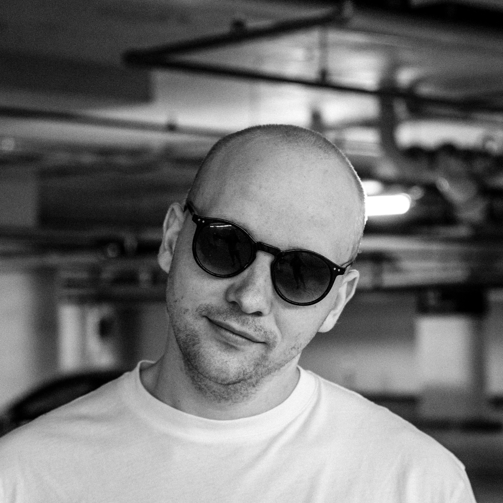

I grew up in Iceland, spent three years in Denmark studying and working, and came home to keep building. I started in frontend, moved into Python and backend, and these days I write code alongside leading the team that ships it.
Transitioned fully into Python backend. Took on team lead, then delivery manager — coordinating projects, supporting growth, keeping things shipping.
Started as a junior frontend developer and gradually moved across the stack. Five years in, I was firmly in Python land and loving it.
Investigated how to strengthen fault tolerance in a microservice architecture aiming for high availability. Set the tone for everything I've cared about since.
Six months building product alongside a startup studio. Learned how fast you can move when constraints are real.
I've helped organise JSConf Iceland 2016 and 2018, and I'm a founding member of skelin.io (formarly known as localhost) — a small community trying to bring back the JS-boom-era programming scene in Iceland. Most weekends, I'm tinkering with side projects.